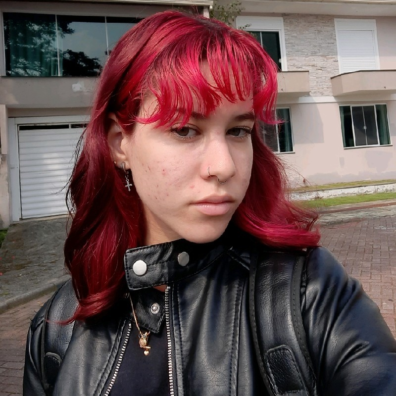

Um pouco sobre mim
Me chamo Jaíza Monteiro dos Santos Freire, atualmente tenho 16 anos e curso Desenvolvimento de Sistemas no Sesi/Senai - CTAI de Florianópolis; Estou no 2 ano do Ensino Médio Técnico.
Sou iniciante no mundo da programação, gosto bastante de Back-End, porém tenho interesse em ingressar na área de Hacking. Obrigada por ver até aqui!
